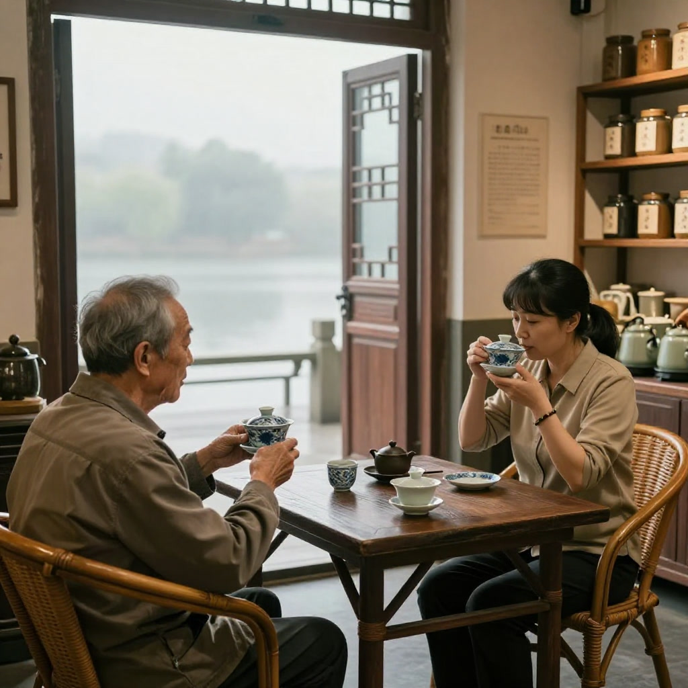
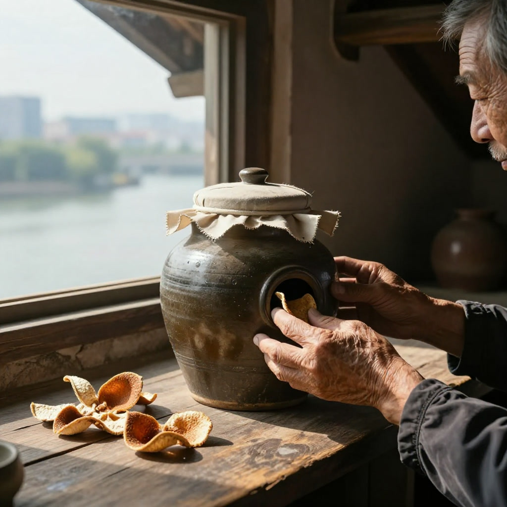
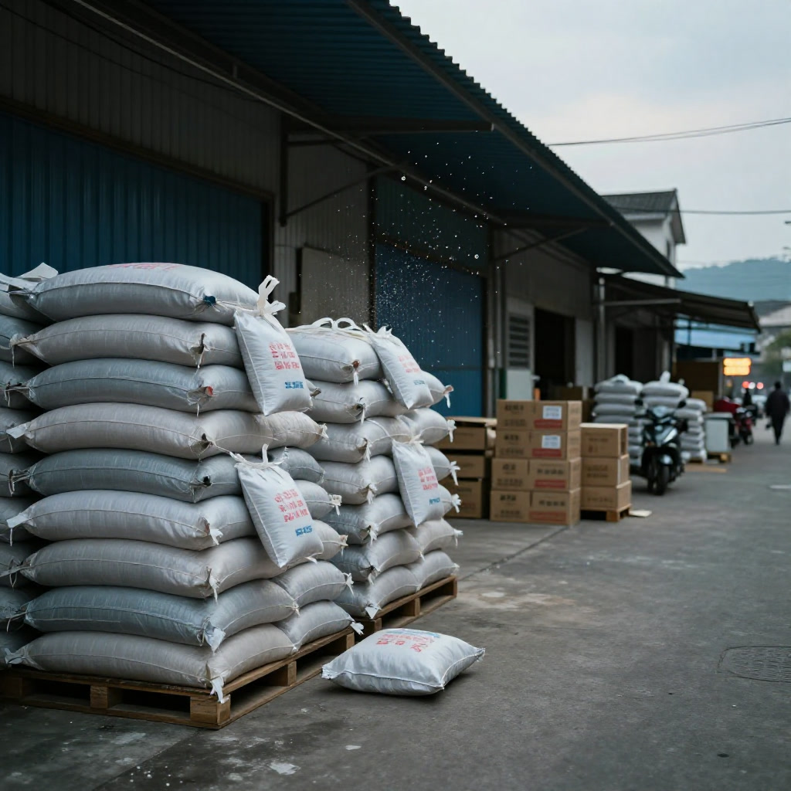
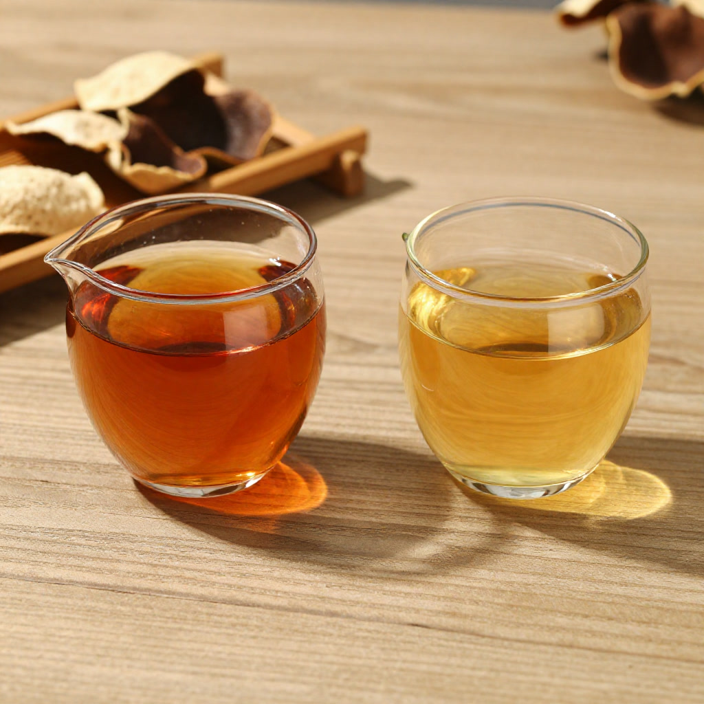
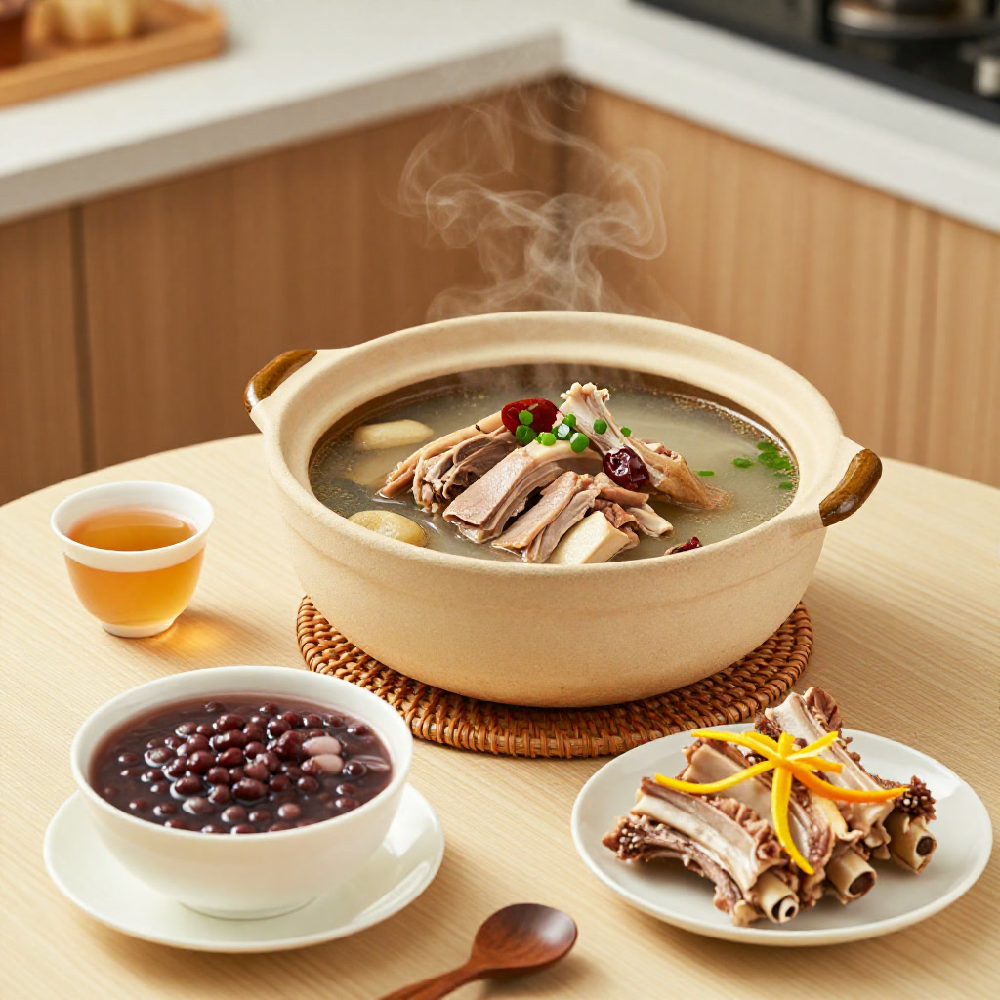

# 断崖式降价的冬天，老茶人守住最后一筐十年皮
**资料说明｜故事化叙事、非真实采访逐字稿**
本文以滢滢姐茶室见闻为灵感，采用故事化方式重构。文中对话属叙事表达，唔系真实采访原话；涉及年份、价格、行情的描述为故事背景，唔构成投资或者收藏建议。
九月的江门新会，天还没亮透，潭江边上已经飘起一层薄雾。
滢滢姐推开茶室那扇半旧的木门时，堂叔公陈伯已经坐在藤椅上了。老人家八十三岁，手里捧着一只老青花盖碗，盖碗里泡的，正是他自己藏了十年的新会陈皮。
“阿滢，你听说了没有？”陈伯没抬头，声音闷闷的，“今年鲜果价又跌了三成，外面那些做皮生意的，仓库堆得满满当当，五年皮都当白菜卖。”
滢滢姐在他对面坐下，顺手接过盖碗抿了一口。茶汤是琥珀色的，温润甘醇，一点杂味都没有。

“我昨天看了新会柑网的报道。”滢滢姐把盖碗放回桌上，“说是今年行业要洗牌，劣币驱逐良币，外地皮冒充新会皮，年份虚标，把整个市场都做烂了。”
陈伯这才抬起头，眼里有一种很深的倦意：“我活了八十年，什么没见过。1988年那场大冻灾，柑树冻死九成，1997年亚洲金融风暴，陈皮价格腰斩，2003年非典那年陈皮一夜翻三倍，2013年新会陈皮行情冲天，2020年又跌到谷底。这一行，从来就是三年涨、五年跌、十年一个轮回。”
他停了一下，指了指墙角那口老瓮：“我那瓮十年皮，今年有人开价八万，我说不卖。”
一、八万块钱的十年皮，到底贵不贵
滢滢姐没有接话。她知道陈伯这瓮皮的故事——2015年冬天，陈伯的小孙子刚出生，他亲自去天马那边的柑园，挑了三十斤老树茶枝柑的冬至果，自己开皮、自己生晒、自己进瓮。瓮是老家传下来的清代老陶瓮，盖子用棉布扎紧，存放在二楼朝南的阁楼里，每年秋分翻晒一次，其余时间绝不打扰。

“阿滢，你算算账。”陈伯掰着手指头，“三十斤鲜果，开皮之后得八斤生晒皮。十年前生果价一斤十二块，光原料就三百六。十年阁楼仓储、十年翻晒人工、十年损耗——五年陈的时候损耗两成，八年陈再损一成，十年下来能剩六斤就算高手。再加上这瓮钱、我这十年功夫……”
“八万不贵。”滢滢姐说。
“是不贵。”陈伯摇摇头，“但今年这个行情，人家出八万我都嫌少。不是钱的问题，是心寒。一斤真正的十年天马老皮，泡出来是这个味——”他又抿了一口，“外面那些染色做旧的，三年皮冒充十年皮，十几块一罐满街都是，谁还认我这瓮真货？”
二、断崖式降价的真相，是泡沫出清
陈伯做了六十年的陈皮，从开皮到陈化到鉴别，每一个环节都摸得通透。他告诉滢滢姐，今年的“断崖式降价”，其实是新会陈皮行业三十年来最彻底的一次洗牌。
“你看 2020 年到 2023 年那波行情，”陈伯说，“什么阿猫阿狗都进来种柑，连台山、开平、恩平这些非核心区都扩了几万亩。一亩地能产三千斤鲜果，三斤鲜果开一斤皮，你算算市场上突然多了多少皮？”
“再加上直播间那些九块九包邮的‘十年老皮’，”滢滢姐接话，“把整个价格体系都打穿了。”
“对。”陈伯点头，“今年鲜果价跌三成，不是今年才跌，是 2023 年就开始跌了。今年只是跌到底了。那些前两年扩种的人，现在囤的皮卖不出去，资金链一断，只能甩货。甩货又把价格往下砸，恶性循环。”
陈伯顿了一下，语气缓下来：“不过阿滢你记住——泡沫出清，是好事。”
“怎么说？”
“我跟你讲，真正的道地新会陈皮，靠的是三样东西：水土、品种、工艺。水土是潭江和西江交汇的咸淡水，梅江、东甲、天马、茶坑这一线，二三十平方公里，再多没有了。品种是茶枝柑，驳枝的、圈枝的、原枝的，各有各的价钱。工艺是自然生晒、干仓陈化，没有捷径可走。这三样东西凑齐了，才是真正的新会陈皮。”
“那些外地皮冒充的、做旧的、速成的，泡沫一破，自然现原形。留下来的，就是真东西。”

三、十年皮和一年皮，差在哪里
滢滢姐趁着话头，问了一个困扰很多新茶友的问题：“陈伯，十年皮和一年皮，差别到底有多大？”
陈伯笑了，拿起盖碗轻轻晃了晃：“你看这个汤色。”
盖碗里的茶汤，呈现出一种很深的琥珀色，通透、干净，在晨光下泛着微微的金边。
“这是十年干仓老皮才有的汤色。”陈伯说，“一年新皮泡出来是浅黄色的，香气是单一的果香，喝起来有点辛、有点燥，放一夜就会返苦。三年皮开始转化，果香褪去，陈香初显，燥性减半。五年皮香气开始有层次了——有果香、有蜜香、有一点点木香。八年皮进入一个关键期，挥发油基本转化完毕，黄酮类物质高度富集，药性完全激活。”
“那十年呢？”
“十年皮，”陈伯端起盖碗深深闻了一下，“香气是醇厚的、带甜的，像老木头又像干果。入口是甘的，不是糖的甜，是那种慢慢回上来的生津的甘。喉咙会感觉润，胃会感觉暖。这种体感，一年新皮是喝不出来的。”
他指着盖碗里的那片皮：“你看这片皮，卷度自然、油室饱满、内囊已经自然脱落，泡开之后柔韧有弹性。一年新皮泡开是脆的、硬的，颜色发青。这就是年份的痕迹。”

四、中秋将至，老茶人的陈皮食谱
聊到近午，陈伯的老伴端出一盅汤——陈伯说这是他每年中秋前后必煲的“陈皮老鸭汤”，用的是家里那瓮八年皮。
“中秋前后天气转燥，”陈伯说，“老鸭性凉，加陈皮正好中和，再放几颗蜜枣、一小把北芪，润肺健脾，老少咸宜。”
他一边说，一边报了一串家常陈皮食谱：
一、陈皮老鸭汤：老鸭半只、八年陈皮一块（约 10 克）、蜜枣 3 颗、北芪 15 克、枸杞少许，炖两个半小时，加盐调味。这是润燥健脾的经典方。
二、陈皮红豆沙：陈皮切丝，与红豆同煮至起沙，加片糖。陈皮理气、红豆祛湿，是岭南人家最经典的糖水。
三、陈皮普洱茶：三年陈皮加五年普洱，沸水冲泡。这是办公族最方便的日常养生法，行气解腻、提神醒脑。
四、陈皮蒸排骨：新鲜排骨用三年陈皮丝、生抽、料酒腌制后蒸制。陈皮去腥提鲜，是厨房里的“隐形功臣”。

“不过要注意，”陈伯特别强调，“气虚、胃火旺的人不要天天喝陈皮水，每周两三次就够。正在吃西药的人也最好先问问医生，陈皮里的黄酮类成分会影响到某些药物的代谢。”
五、寒冬里，老茶人的守与不守
吃完午饭，陈伯带滢滢姐上二楼阁楼看他的皮。
阁楼不大，但通风极佳，南窗正对着潭江。陈伯的皮，分年份、分产地、分品种，整整齐齐码在十几口老陶瓮里。每口瓮上都挂着一张泛黄的纸签，注明“天马·2015·冬至果·十年陈”、“东甲·2017·圈枝·八年陈”等等。
“阿滢，”陈伯一边翻晒一边说，“今年行情再差，我也不慌。为什么？因为我这十几瓮皮，都是我自己亲手做的，每一瓮的来历我都说得清清楚楚。真正的好东西，从来不愁卖。愁的是那些年份虚标、品质不稳定的货。”
他拍了拍一口瓮：“你记住，新会陈皮这行，短期是生意，长期是文化。生意可以亏，文化不能丢。那些只想着炒皮赚快钱的人，迟早会被市场淘汰；那些踏踏实实做品质的人，熬过冬天就是春天。”
滢滢姐站在阁楼里，看着窗外的潭江水和远处连绵的柑园，忽然觉得陈伯这番话，不只是在讲陈皮。
写在最后
今年的新会陈皮市场，正在经历三十年来最猛烈的一次洗牌。
对柑农而言，盲目扩种的时代结束了；对商户而言，投机套利的空间消失了；对收藏者而言，闭眼追高的日子一去不复返。
但对真正坚守品质的人来说，寒冬恰恰是最好的时机——泡沫出清，劣币退场，留下来的，都是真金。
一瓮好皮，三分原料、三分工艺、三分时光、一分初心。
这是陈伯教给滢滢姐的道理，也是新会陈皮跨越七百年的根本。
愿每一位爱皮之人，都能在今年这个冬天，藏下一瓮属于自己的“真”皮。
使用提示
本文只作一般资料整理，不构成食品安全、营养、收藏投资或者医疗建议。选购、保存或者食用陈皮，应向正规渠道及有关主管部门核实。如有身体不适或者正在接受治疗，请咨询合资格专业人士。唔好将陈皮当成治疗方案。
常见问题
Q1：八万蚊的十年皮到底贵唔贵？
文中陈伯按原料、损耗、仓储人工算了一笔账，认为唔贵。但本文唔作价格判断，实际成交应以市场行情、产地凭证、检测资料为准，唔好将故事入面的数字当成定价依据。
Q2：断崖式降价系咩原因？
故事入面归纳为扩种带嚟供过于求、直播间低价货打穿价格体系、囤货资金链断裂甩货三层原因，属于故事化转述的行业背景，唔系统计结论。
Q3：十年皮同一年皮点样分？
文中提到汤色、香气、口感、皮身四个观察角度：十年皮汤色深琥珀、香气醇厚回甘、皮身柔韧；一年皮汤色浅黄、带辛燥感、皮身偏硬。年份只系其中一项资料，仲要睇产地、品种、加工同保存。
Q4：陈皮食谱人人啱食吗？
唔系。文中已经提醒，气虚、胃火旺的人唔好天天饮陈皮水，正在食西药的人最好先问医生。食谱只作日常饮食参考，唔好将陈皮当成治疗方案。
Q5：文中对话系真实采访吗？
唔系。本文以茶室见闻为灵感作故事化重构，对话属叙事表达，唔应视为任何真人的原话；涉及年份、价格、行情的描述为故事背景，唔构成投资或者收藏建议。
来源
1. 本文为原创故事，行情背景综合公开行业报道转述，未指向单一来源。 2. 新会陈皮选购、保存的一般方法，可参考地方标准及正规渠道标示。
滢滢姐，新会土生土长的陈皮爱好者。每日行走在柑园、仓库与茶室之间，用脚步丈量每一块陈皮的来历。